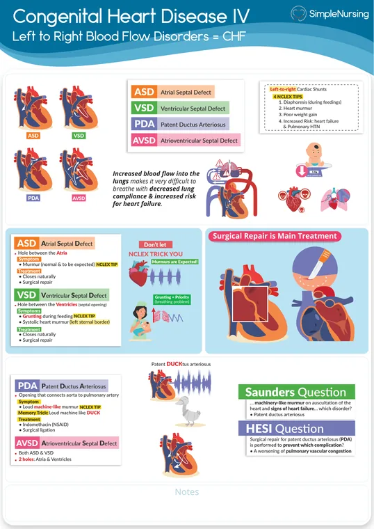
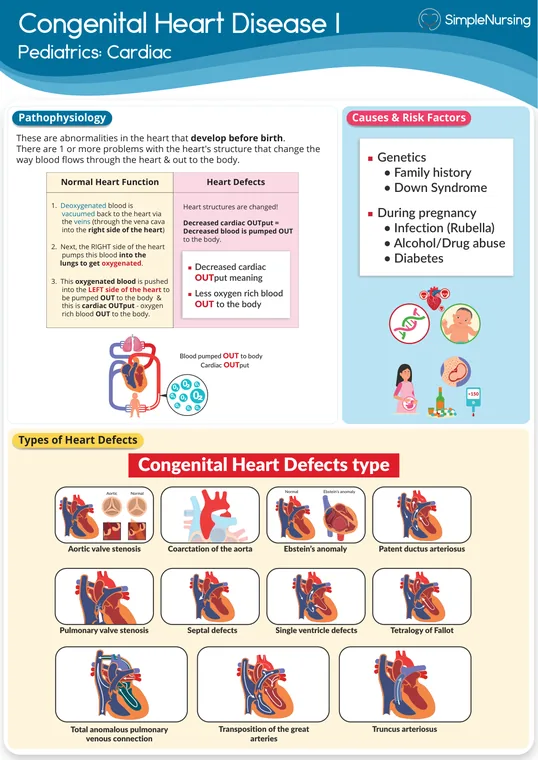
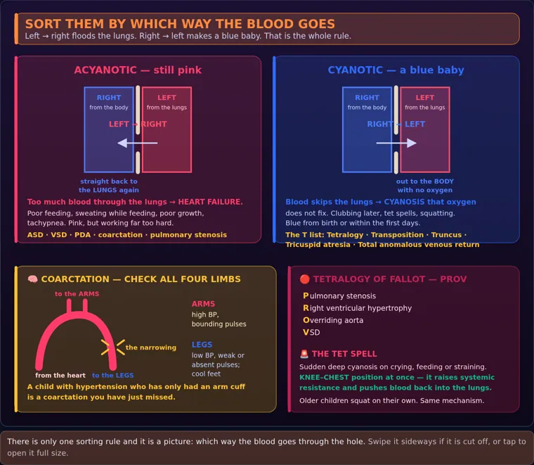
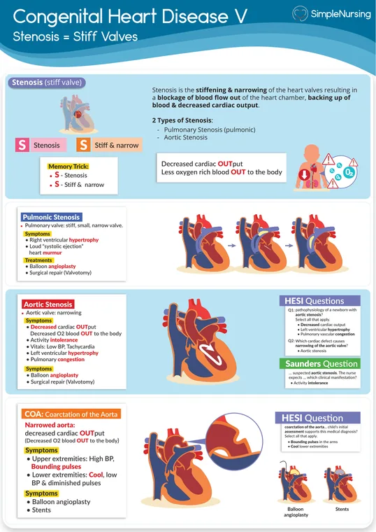
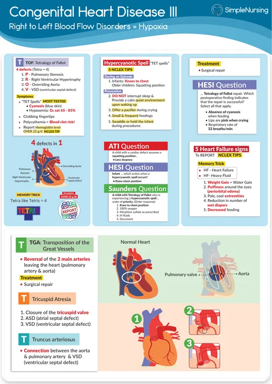
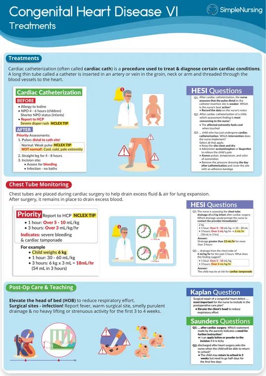

Cardiac
Exam 3 — Respiratory and cardiacWeek 9
NUR 235 · MODULE 9 · PLAY & PRACTICE
🫀 Follow the Blood Flow
24 matching prompts, 11 case questions and 4 visual exercises. Four pairs at a time, with saved practice.
Play this module →
Size, pressures and associated lesions determine the physiology; the name alone is not enough.
Read the picture
Structural connection
An opening links chambers or great vessels.
Pressure gradient
The gradient influences shunt direction and volume.
Circulatory effect
Pulmonary flow, chamber workload or oxygenation changes.
ASD and VSD
Openings in atrial or ventricular septa can create left-to-right flow after birth.
PDA
Persistent connection between aorta and pulmonary artery changes flow after birth.
AV septal defect
Septal and atrioventricular valve anatomy are affected.
💡 The one idea
Sort congenital heart defects by whether blood shunts the wrong way, and which way. Left-to-right = too much lung blood = heart failure. Right-to-left = blue baby.
| Group | Blood goes | Result | Examples |
|---|---|---|---|
| Acyanotic | Left → right | Pulmonary overload, heart failure, poor feeding, sweating | ASD, VSD, PDA, coarctation |
| Cyanotic | Right → left | Deoxygenated blood to the body — cyanosis | Tetralogy of Fallot, transposition |
🧡 Tetralogy of Fallot — the four
- Pulmonary stenosis
- Right ventricular hypertrophy
- Overriding aorta
- VSD
PROV. The classic sign is the “tet spell” — sudden deep cyanosis during crying or feeding.
For a tet spell, put the infant in KNEE-CHEST position immediately. It raises systemic resistance and pushes blood back through the lungs.
⭐ Heart failure in an infant looks like feeding trouble
- Sweating with feeds and tiring after a few minutes
- Poor weight gain — often the earliest sign
- Tachypnea, tachycardia at rest
- Hepatomegaly — the pediatric equivalent of peripheral edema
Nursing care: small frequent feeds, higher-calorie formula, cluster care to allow rest.
🚨 Digoxin in children
Count the apical pulse for a full minute before every dose. Hold and report if <90–110 in an infant or <70 in a child.
Early toxicity in a child is usually vomiting and bradycardia, not visual changes.
Never repeat a dose that was vomited, and never mix digoxin into a bottle of formula - if the feed is not finished, the dose is unknown.
✅ Kawasaki disease
Fever ≥5 days plus red eyes, strawberry tongue, cracked lips, rash, swollen red hands and feet with later peeling.
It causes coronary artery aneurysms, so treatment is IVIG plus aspirin — the one situation where a child is given aspirin.
⭐ High-yield — what the exam actually asks
Show 5 moreHide these 5
- Fetal shunts: foramen ovale closes with the first breaths, ductus arteriosus within
2–3 days, ductus venosus shortly after birth. Failure to close produces congenital defects. - Left-to-right shunts (ASD, VSD, PDA) are acyanotic — the child stays pink. Right-to-left shunts (tetralogy, tricuspid atresia, transposition) are cyanotic — blue.
- All cyanotic lesions are ductal-dependent. Prostaglandin E1 keeps the duct OPEN pre-op and needs a reliable IV; watch for apnea and hypotension. Indomethacin does the opposite and CLOSES a PDA — the only defect medication can fix.
- Tetralogy of Fallot: pulmonary stenosis, RV hypertrophy, VSD, overriding aorta. For a tet spell, knee-to-chest raises systemic vascular resistance and reduces right-to-left shunting.
- PDA gives a continuous machine-like murmur; VSD a harsh murmur at the lower left sternal border.
Show 5 moreHide these 5
- Coarctation: four-point BP shows high pressure and bounding pulses in the arms with weak pulses and hypotension in the legs.
- Digoxin: apical pulse for a full minute before the dose, give on an empty stomach, never repeat a dose after vomiting. Toxicity = nausea, vomiting, bradycardia.
- Heart failure in infants: tachycardia at rest, sweating with feeds, poor weight gain, hepatomegaly as the earliest sign. Infants lose weight; older children gain fluid weight. Cluster care, feed upright, higher-calorie smaller feeds.
- Post cardiac cath: keep the leg straight
4–8 hr, check bilateral pulses/temperature/color, push fluids to clear contrast. - Kawasaki: fever
>5 daysunresponsive to antipyretics, conjunctivitis, strawberry tongue, peeling hands and feet. IVIG plus high-dose aspirin. Coronary aneurysm is the feared complication. No live vaccines for 11 months after IVIG.
Show 2 moreHide these 2
- Rheumatic fever follows untreated group A strep; ASO titer confirms it; carditis is the most serious criterion.
- SVT: vagal maneuvers first, then adenosine.
📕 From your ATI review book
Covered by ch. 20 (cardiovascular disorders).
- Timing of repairs is examinable. Transposition of the great arteries is switched within the first 2 weeks; truncus arteriosus within the first month; tetralogy of Fallot is fully repaired within the first year.
- Hypoplastic left heart takes three staged operations: shunt, then Glenn, then modified Fontan.
- Infective endocarditis is treated with IV antibiotics for 2 to 6 weeks, usually through a PICC — a family who says "seven days" has misunderstood. The PICC stays in for the whole course: it is not re-sited like a peripheral IV, the arm is not boarded, and it goes in at the bedside under local, not in the OR (the parent teaching is here).
- Prophylaxis is for the high-risk group only: prosthetic valves, previous endocarditis, and unrepaired cyanotic defects.
- Kawasaki disease: low-dose aspirin continues for about 6 months after the procedure or acute phase. This is the one childhood condition where aspirin is deliberately given.
- High altitude worsens hypoxia in a child with a cyanotic defect and is avoided where possible.
📚 From your Maternal & Child textbook
Pillitteri, Maternal and Child Health Nursing — ch. 41 (cardiovascular).
- High altitude worsens hypoxia in a child with a cyanotic defect and is avoided where possible.
- Endocarditis prophylaxis is for the high-risk group only: prosthetic valves, previous endocarditis, unrepaired cyanotic defects. Treatment is IV antibiotics for 2 to 6 weeks.
⚠️ Exam traps
- Prostaglandin E1 (opens) vs prostaglandin inhibitor (closes) is the highest-yield reversal in the whole course.
- Aspirin is the exception in Kawasaki — the one place you do give it to a child.
- More oxygen is not the answer for cyanotic defects. Some are kept at sats of 75–85% until surgery.
🧠 Mind maps 1
One per disorder, built from the structure of your ATI chapter.
🎯 Who gets it
- Maternal factors: infection, alcohol or substance use during pregnancy, diabetes mellitus
- Genetic factors: family history of congenital heart disease, trisomy 21, other congenital anomalies or chromosomal abnormalities
- Pulmonary artery hypertension can have a familial link
- Infective endocarditis: congenital or acquired heart disease, indwelling catheters
👀 What you see
- Increased pulmonary blood flow defects shunt blood left to right from higher to lower pressure, raising pulmonary volume and producing heart failure signs
- VSD: opening in the ventricular septum, loud harsh murmur at the left sternal border, heart failure; many close on their own early in life
- ASD: opening in the atrial septum, systolic murmur with fixed split S2, often asymptomatic
- PDA: fetal connection between pulmonary artery and aorta stays open — machinery-hum systolic murmur, wide pulse pressure, bounding pulses, rales
🧪 What confirms it
- CBC, urinalysis, ABGs with pH, hemoglobin, hematocrit, electrolytes
- Blood cultures — positive cultures diagnose infective endocarditis
- Erythrocyte sedimentation rate and C-reactive protein elevated with inflammation
- Throat culture for group A strep; screening is recommended for all school-age children with sore throat
🩺 What you do
- Support child and family through diagnosis and treatment decisions
- Monitor vital signs and cardiac status with continuous cardiac monitoring
- Assess for heart failure: falling urine output, gallop rhythm, tachycardia, respiratory distress
- Track intake and output and obtain daily weights
💊 Drugs
- Digoxin improves myocardial contractility
- Diuretics such as furosemide, and afterload reducers such as ACE inhibitors, for heart failure
- Beta blockers, calcium channel blockers, ACE inhibitors, and anticoagulants for cardiovascular management
- High-dose IV anti-infectives for 2-6 weeks for infective endocarditis
💬 What you teach
- High-risk children need prophylactic antibiotics before dental procedures, respiratory tract surgery, and procedures on infected skin or musculoskeletal tissue, per American Heart Association guidance
- High-risk group: artificial heart valves, prior infective endocarditis, unrepaired cyanotic congenital heart disease, and repaired congenital heart disease with residual defects
- Watch for and report signs of infection and keep follow-up appointments
⚠️ What goes wrong
- Hypercyanotic (Tet) spell causing severe hypoxemia and cerebral hypoxia is an emergency — position the child comfortably, give 100% oxygen, and maintain airway, breathing, and circulation
- Cardiac catheterization risks: nausea and vomiting, low-grade fever, loss of pulse in the catheterized limb, transient dysrhythmias, hypoglycemia, and acute hemorrhage at the entry site
- For catheterization bleeding, apply direct continuous pressure 2.5 cm (1 in) above the entry site over the vessel puncture, lay the child flat to slow bleeding, notify the provider immediately, and prepare replacement fluids and antiemetics; teach families to watch for bleeding and infection at home
- Heart failure progressing to transplant — maintain oxygen, diuretics, digoxin, and ACE inhibitors
Read left to right: who gets it → what you see → what confirms it → what you do → what goes wrong. Cover a column and rebuild it out loud.
📊 Lecture slides 1
The deck this module is built on.
🎥 Lecture recordings 4
Tap a card to open that recording in Google Drive. The same list lives in the lecture library.
All NUR 235 recordings →📥 Download combined lecture slides (.pptx)🖼️ Infographics 27
Tap a card to open the matching graphics in your infographic library.

🖼️ASD, VSD, PDA, AVSDOpens in Drive →
🖼️Congenital Heart - Patho & CausesOpens in Drive →
📚Rheumatic Fever & Kawasaki DiseseOpen the full study page →
🖼️Stenosis & COAOpens in Drive →
🖼️Tetralogy of Fallot & TGAOpens in Drive →
🖼️Treatments & Chest TubesOpens in Drive →📄 Simple Nursing handouts for this module — 9 of them, straight from your Drive.


🖼️ See all 114 NUR 235 handouts in the visual library →
🧒 Pediatric disease pictures 12
One illustrated card per condition: a labeled picture, an original memory picture with its key, and the nursing notes in plain text underneath. Original study illustrations — not clinical photographs, not Picmonic.
 Patent ductus arteriosusPicture + mnemonic + nursing care →
Patent ductus arteriosusPicture + mnemonic + nursing care → Atrial septal defectPicture + mnemonic + nursing care →
Atrial septal defectPicture + mnemonic + nursing care → Ventricular septal defectPicture + mnemonic + nursing care →
Ventricular septal defectPicture + mnemonic + nursing care → Tricuspid atresiaPicture + mnemonic + nursing care →
Tricuspid atresiaPicture + mnemonic + nursing care → Transposition of the great arteriesPicture + mnemonic + nursing care →
Transposition of the great arteriesPicture + mnemonic + nursing care → Tetralogy of FallotPicture + mnemonic + nursing care →
Tetralogy of FallotPicture + mnemonic + nursing care → Coarctation of the aortaPicture + mnemonic + nursing care →
Coarctation of the aortaPicture + mnemonic + nursing care → Pulmonary stenosisPicture + mnemonic + nursing care →
Pulmonary stenosisPicture + mnemonic + nursing care → Aortic stenosisPicture + mnemonic + nursing care →
Aortic stenosisPicture + mnemonic + nursing care → Pediatric heart failurePicture + mnemonic + nursing care →
Pediatric heart failurePicture + mnemonic + nursing care → Kawasaki diseasePicture + mnemonic + nursing care →
Kawasaki diseasePicture + mnemonic + nursing care → Rheumatic feverPicture + mnemonic + nursing care →
Rheumatic feverPicture + mnemonic + nursing care →🖼️ Visual references 18
Additional resources for this module, grouped by type. Open a group to choose a file or page.
Infographics 15


Study guides & PDFs 2
PowerPoints 1
📋 Active Learning Templates 1
One per disorder. Every row is filled from that section of the ATI chapter — print it, cover the right, rebuild it.
📋 Cardiovascular Disorders6 parts
🖼️ InfographicsCongenital Heart - Patho & CausesHeart Failure IHeart Failure IIComplications & SignsRheumatic Fever & Kawasaki DiseseTetralogy of Fallot & TGAASD, VSD, PDA, AVSDStenosis & COATreatments & Chest Tubes
Filled from ATI chapter 20, row by row from that chapter’s own sections — 12 of 12 rows have content.
1 rows came from outside your ATI chapter — 1 cite a source, 0 are built from this page’s own notes. Each one is labeled.
🧭 What it isAlterations in Health (Diagnosis) · Health Promotion & Disease Prevention
Alterations in Health (Diagnosis)
- Pediatric heart disease is either congenital or acquired. A congenital defect is an anatomic abnormality present from birth that usually produces heart failure and hypoxemia. Heart failure means output cannot meet the body's metabolic and physical demands. Defects group by flow pattern: increased pulmonary flow (VSD, ASD, PDA), decreased pulmonary flow (tricuspid atresia, tetralogy of Fallot), obstructed flow (aortic stenosis, pulmonary stenosis, coarctation of the aorta), and mixed flow (truncus arteriosus, transposition of the great arteries, hypoplastic left heart syndrome). Acquired conditions include Kawasaki disease, rheumatic fever, infective endocarditis, cardiomyopathy, pulmonary artery hypertension, shock, and dyslipidemia. Hyperlipidemia is rising with poor diet and inactivity, increasing later obesity and adult heart disease risk.
Health Promotion & Disease Prevention
Not in your ATI chapter — filled from AHA, n.d..
- Children with certain congenital heart defects may need antibiotic prophylaxis before dental work involving the gum tissue.
- A cardiologist determines whether a specific heart condition warrants prophylaxis, since not every defect requires it.
- Families of at-risk children are advised to carry an AHA wallet card listing the recommended antibiotic and dose.
American Heart Association · Infective Endocarditis · open the source →
👀 How it shows upAssessment — Risk Factors · Assessment — Expected Findings
Assessment — Risk Factors
- Maternal factors: infection, alcohol or substance use during pregnancy, diabetes mellitus
- Genetic factors: family history of congenital heart disease, trisomy 21, other congenital anomalies or chromosomal abnormalities
- Pulmonary artery hypertension can have a familial link
- Infective endocarditis: congenital or acquired heart disease, indwelling catheters
- Cardiomyopathy: genetics, infection, deficiency states, metabolic conditions, collagen disease, drug toxicity, dysrhythmias
- Cardiogenic shock after cardiac surgery and with acute dysrhythmias, heart failure, trauma, or cardiomyopathy; anaphylaxis in children with allergies, asthma, or family history
- Rheumatic fever follows 2-4 weeks after untreated or partially treated group A strep pharyngitis
- Dyslipidemia: family history, genetics, obesity, inactivity, diabetes, hypertension, congenital heart disease, transplant recipients, cancer survivors, Kawasaki disease with coronary aneurysms, chronic inflammatory disease, and medications such as oral contraceptives, diuretics, and beta blockers
Assessment — Expected Findings
- Increased pulmonary blood flow defects shunt blood left to right from higher to lower pressure, raising pulmonary volume and producing heart failure signs
- VSD: opening in the ventricular septum, loud harsh murmur at the left sternal border, heart failure; many close on their own early in life
- ASD: opening in the atrial septum, systolic murmur with fixed split S2, often asymptomatic
- PDA: fetal connection between pulmonary artery and aorta stays open — machinery-hum systolic murmur, wide pulse pressure, bounding pulses, rales
- Obstructive defects narrow the outflow, raising pressure behind the defect and lowering it beyond, cutting cardiac output and causing heart failure signs
- Pulmonary stenosis: narrowed pulmonary valve or artery, systolic ejection murmur, cardiomegaly, cyanosis proportional to severity
- Coarctation of the aorta: weak femoral pulses and lower blood pressure in the legs than the arms
- Decreased pulmonary flow defects combine outflow obstruction with an ASD or VSD, shunting deoxygenated blood right to left into the systemic circulation; hypercyanotic 'Tet' spells bring acute cyanosis and hyperpnea
🧪 How it is confirmedLaboratory Tests · Diagnostic Procedures
Laboratory Tests
- CBC, urinalysis, ABGs with pH, hemoglobin, hematocrit, electrolytes
- Blood cultures — positive cultures diagnose infective endocarditis
- Erythrocyte sedimentation rate and C-reactive protein elevated with inflammation
- Throat culture for group A strep; screening is recommended for all school-age children with sore throat
- Antistreptolysin O titer elevated or rising is the most reliable test for rheumatic fever
Diagnostic Procedures
- Chest radiograph for cardiomegaly
- ECG for conduction disturbances and to evaluate heart and valve function, and to identify dysrhythmias
- Echocardiography, transthoracic or transesophageal, shows vegetations and pericardial effusion, and evaluates heart size and ventricular and valve function; repeat 4-6 weeks after treatment for rheumatic fever
- Cardiac catheterization is the gold standard
- Modified Jones criteria diagnose rheumatic fever — two major criteria, or one major plus two minor, after a documented strep infection
🩺 What you doNursing Care · Medications · Therapeutic Procedures
Nursing Care
- Support child and family through diagnosis and treatment decisions
- Monitor vital signs and cardiac status with continuous cardiac monitoring
- Assess for heart failure: falling urine output, gallop rhythm, tachycardia, respiratory distress
- Track intake and output and obtain daily weights
- Give IV fluids so the child does not become dehydrated, and offer clear liquids plus soft foods that are not acidic
- Rheumatic fever: bed rest during acute illness, prescribed antibiotics, balanced meals, and assessment for chorea shown as nervousness, behavior change, and shortened attention span
- Kawasaki: give IV gamma globulin per policy and aspirin as prescribed, provide oral hygiene and lip balm, apply cool cloths and lotion, keep the environment quiet, and cluster care to allow rest
- Antibiotic prophylaxis: watch for allergic response such as anaphylaxis, hives, or rash, and for nausea, vomiting, or diarrhea
- Bile acid sequestrants (cholestyramine, colesevelam, colestipol): mix the powder in 4-6 oz of water or juice and give immediately; monitor for constipation, abdominal pain, flatulence, nausea, and bloating, and check liver function, CBC, creatine kinase, and fasting lipids at 4 and 8 weeks and after any dose change
Medications
- Digoxin improves myocardial contractility
- Diuretics such as furosemide, and afterload reducers such as ACE inhibitors, for heart failure
- Beta blockers, calcium channel blockers, ACE inhibitors, and anticoagulants for cardiovascular management
- High-dose IV anti-infectives for 2-6 weeks for infective endocarditis
- Rheumatic fever prophylaxis: oral penicillin V twice daily or monthly IM penicillin G; with penicillin allergy use an oral cephalosporin, clindamycin, or a macrolide; duration ranges from 5 years to lifelong depending on residual heart disease
- Kawasaki gamma globulin: 2 g/kg IV over 8-12 hr, ideally within the first 10 days of illness; repeat 1000-2000 mg with or without corticosteroids if fever persists 36 hr or more after the first infusion
- Kawasaki aspirin: high dose 30-100 mg/kg/day divided every 6 hr, then 3-5 mg/kg/day once afebrile until platelet count and CRP/ESR normalize at about 6-8 weeks, and indefinitely if coronary abnormalities develop
- Enoxaparin anticoagulation when coronary aneurysms are present
Therapeutic Procedures
- VSD: watch for spontaneous closure, diuretics, catheter-based closure, or patch repair which carries heart block risk
- ASD: patch closure with cardiopulmonary bypass, low-dose aspirin for 6 months after the procedure
- PDA: indomethacin, ibuprofen, or acetaminophen to close the duct; coil occlusion during catheterization; furosemide; neutral thermal environment; treat anemia; thoracoscopic ligation
- Pulmonary stenosis: balloon angioplasty or valvuloplasty during catheterization, or pulmonary valvotomy in children
- Aortic stenosis: balloon dilation during catheterization, Ross procedure, or aortic valvotomy
- Coarctation of the aorta: balloon angioplasty in infants and children, stents in adolescents, or surgical repair
💬 Around the patientClient Education · Interprofessional Care
Client Education
- High-risk children need prophylactic antibiotics before dental procedures, respiratory tract surgery, and procedures on infected skin or musculoskeletal tissue, per American Heart Association guidance
- High-risk group: artificial heart valves, prior infective endocarditis, unrepaired cyanotic congenital heart disease, and repaired congenital heart disease with residual defects
- Watch for and report signs of infection and keep follow-up appointments
- Adhere strictly to the medication schedule
- Avoid high altitude when possible because of hypoxia risk; supplemental oxygen can prevent hypoxia
- After discharge: avoid smoking, follow a heart-healthy diet, and continue screening with cholesterol testing, blood pressure monitoring, and periodic cardiac imaging
Interprofessional Care
- Dietitian consultation and dietary counseling to guide food choices
⚠️ What goes wrongComplications
Complications
- Hypercyanotic (Tet) spell causing severe hypoxemia and cerebral hypoxia is an emergency — position the child comfortably, give 100% oxygen, and maintain airway, breathing, and circulation
- Cardiac catheterization risks: nausea and vomiting, low-grade fever, loss of pulse in the catheterized limb, transient dysrhythmias, hypoglycemia, and acute hemorrhage at the entry site
- For catheterization bleeding, apply direct continuous pressure 2.5 cm (1 in) above the entry site over the vessel puncture, lay the child flat to slow bleeding, notify the provider immediately, and prepare replacement fluids and antiemetics; teach families to watch for bleeding and infection at home
- Heart failure progressing to transplant — maintain oxygen, diuretics, digoxin, and ACE inhibitors
- Infective endocarditis complications: myocardial infarction and embolism
- Rheumatic fever complications: carditis with permanent heart disease, atrial fibrillation, embolism
- Kawasaki coronary artery dilation or aneurysm, most common in the subacute phase — serial echocardiograms and anticoagulation
🎯 Module quiz
Questions for this module. They also feed the Mega Quiz.
Nothing here yet — drop it in when you have it